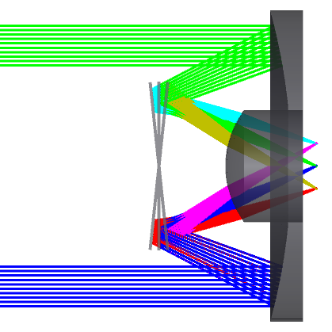
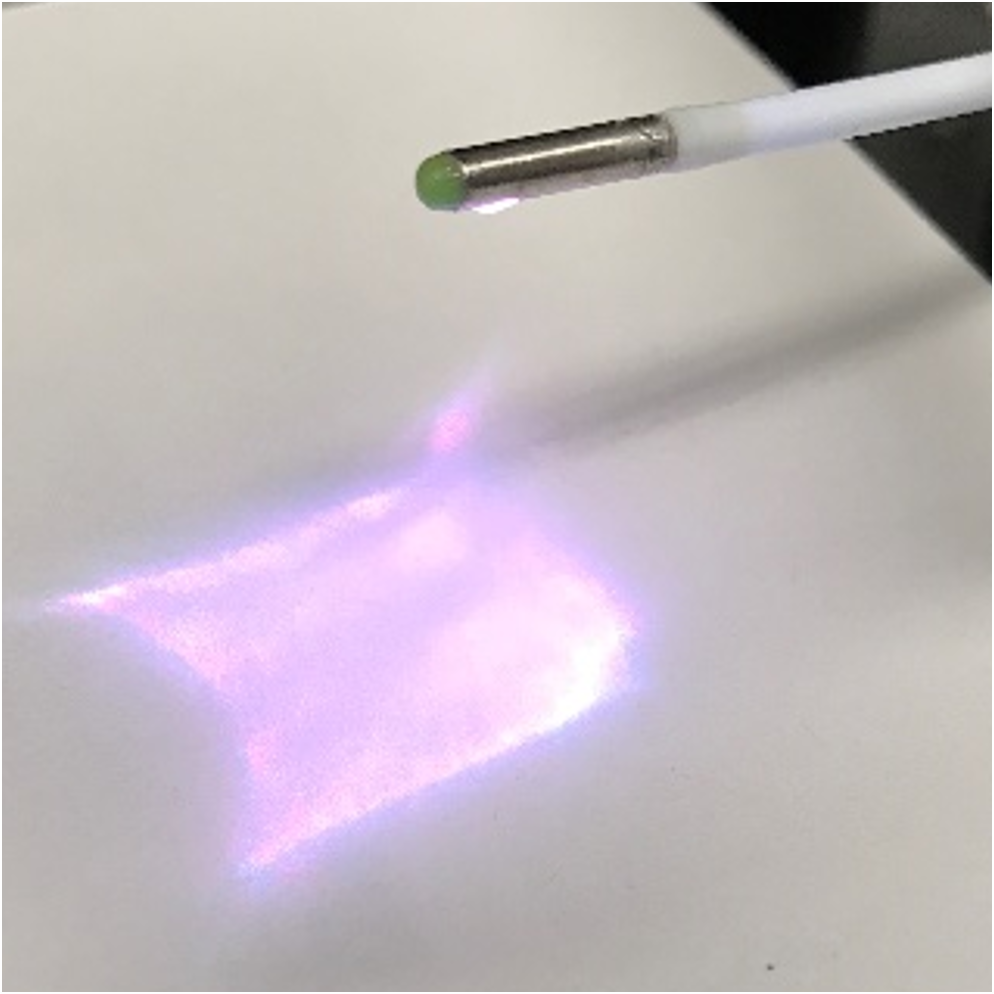

Research


EndomicroscopeI have designed and developed multiple variations of advanced imaging instruments and systems, including wide-field endoscopes, confocal endoscope, dual-axis confocal hyperspectral endoscopes, and photoacoustic endoscopes. These systems are fundamentally based on a MEMS-mirror scanner-oriented design. My involvement spans the entire development lifecycle, including optical system design with ray-tracing techniques, mechanical packaging design using CAD tools, and comprehensive system integration grounded in mechatronics principles. I also develop control strategies that enable real-time image reconstruction and display through data acquisition (DAQ) systems. Each endoscope type I have developed offers unique capabilities:
Clinical TrialsSeveral clinical trials, including NCT04304781, NCT03852576, NCT03220711, and NCT03589443 (as registered on ClinicalTrials.gov), have been conducted in collaboration with endoscopists at University of Michigan Health System (UMHS) and Prof. Eric Seibel's group at the University of Washington. These trials demonstrated innovative imaging methodologies using targeted contrast agents and novel imaging instruments developed by our team. Additionally, the collected imaging data was leveraged to develop a deep learning model for disease stage classification, enhancing diagnostic accuracy and clinical insight. These clinical trials have been pivotal in validating and advancing our imaging systems in clinical settings. For more detailed information, please refer to the publications section or ClinicalTrials.gov. |